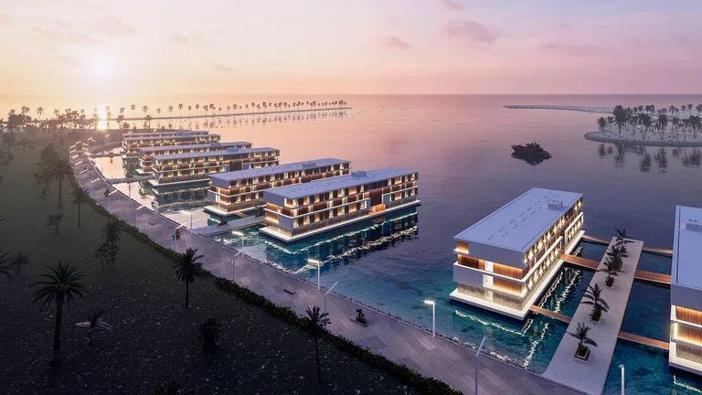
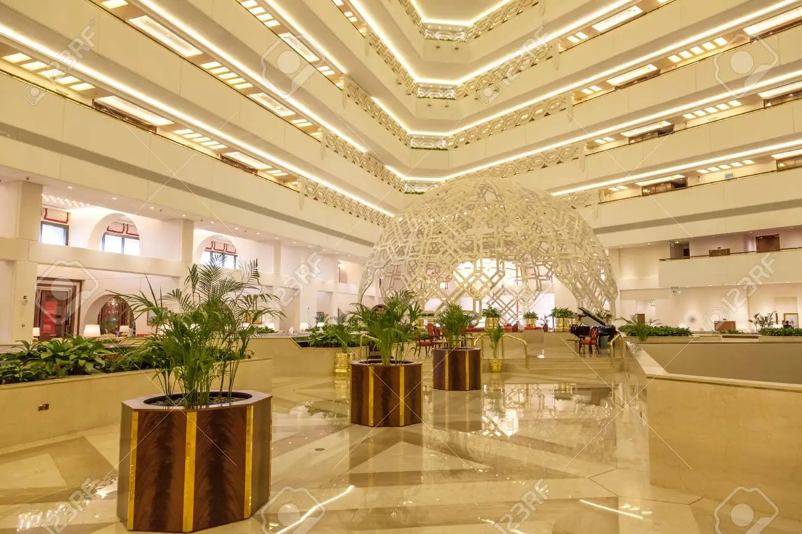
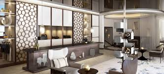
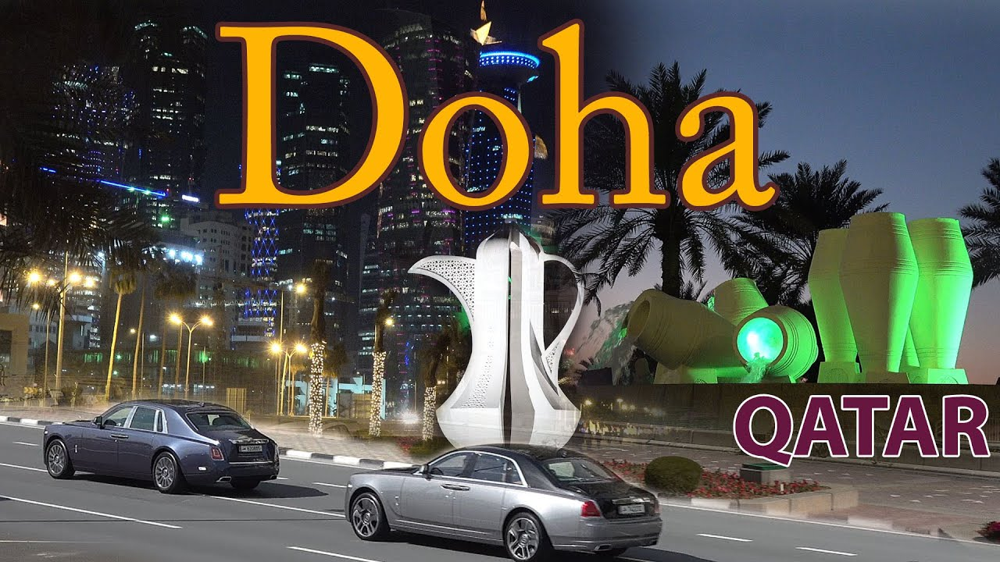

Los mejores hoteles del mundo para disfrutar de una fiesta inolvidable.
Traductores a disposición las 24 horas para cubrir todos los requerimientos
de nuestro húespedes.
Qatar tiene algo para todos con su amplia gama de hoteles y su hospitalidad de renombre mundial. La mayoría de los hoteles están ubicados en la capital, Doha, pero hay varios lugares de retiro fuera de la ciudad para los visitantes que buscan algo diferente.


Hoteles flotantes para disfrutar de la mejor antención junto al mar con todo el confort para disfrutar del mundial.
Catar ofrece hoteles excepcionales con un servicio de clase mundial, muchos de ellos con instalaciones y arquitectura exclusivas.
